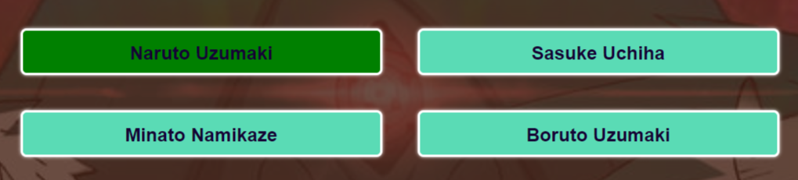
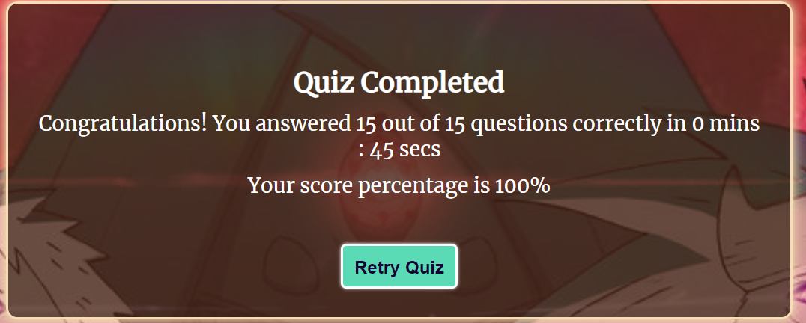

Whether you've watched the anime or not take part in this quiz about the show.
You'll do well in it, believe it.
The quiz is simple and plays the same as any other quiz on the internet. If you answer the question correctly the answer you chose will be highlighted in green as seen in the picture below.
However if you choose the wrong answer, the wrong answer will be highlighted in red and the correct answer would be highlighted in green so you know the answer as shown in the picture below.

Once you answer all 15 questions in this quiz your results will be shown with how many questions you answered correcly out of 15 and what percentage you got out of 100. If you aren't satisfied with your score, you can always select the 'Retry Quiz' button and do the test again.
I hope you now understand how to play the quiz.